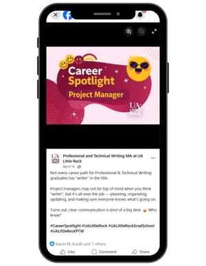

Hannah Darden
Social Media Campaign:
Professional & Technical Writing

Creative Process and Strategy:
- Developed social media post concepts and copy around writing, career possibilities, and student interests.
- Created branded static graphics that aligned with the university's visual identity.
- Planned varied content themes , including career spotlights, questions for writers, and timely posts.
- Adapted writing for social media to keep information concise, engaging, and accessible.
- Prepared posts for a consistent content schedule with attention to deadlines and visual cohesion.

Social Media Posts
Scroll through the posts or select one for a closer look.
Skills Used and Learned
- Social media copywriting
- Content concept development
- Visual content design
- Content planning
- Brand consistency
Project Highlights:
- Created content that introduced audiences to career paths beyond traditional writing roles.
- Developed varied post themes to make professional and technical writing more approachable.
- Maintained a cohesive visual presentation across educational and audience-engagement posts.